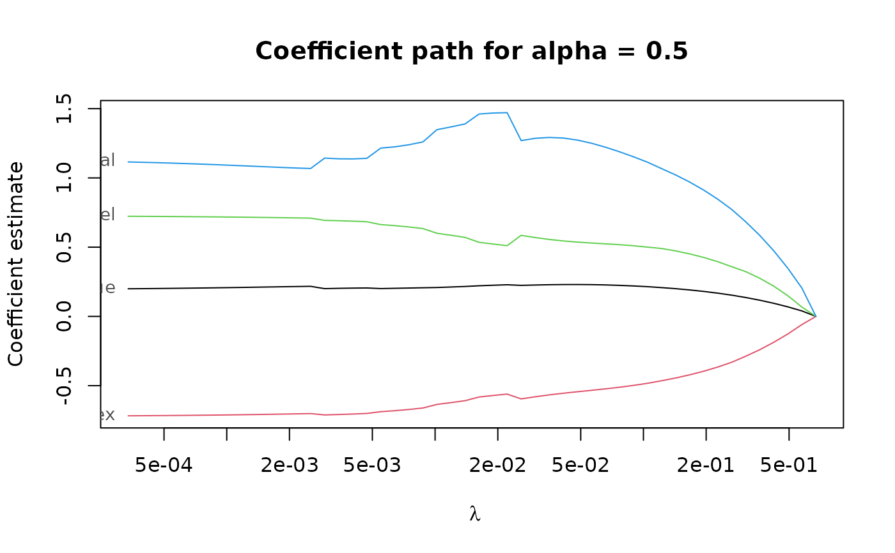
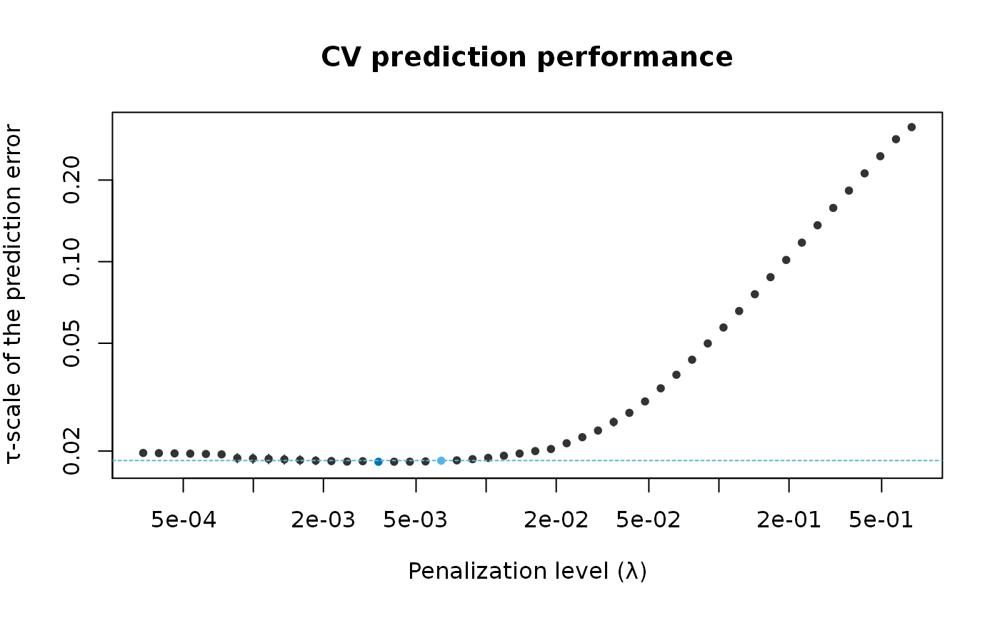

Extract coefficients from an adaptive PENSE (or LS-EN) regularization path fitted by pense()
or elnet().
# S3 method for pense_fit coef( object, lambda, alpha = NULL, sparse = NULL, standardized = FALSE, exact = deprecated(), correction = deprecated(), ... )
| object | PENSE regularization path to extract coefficients from. |
|---|---|
| lambda | a single number for the penalty level. |
| alpha | Either a single number or |
| sparse | should coefficients be returned as sparse or dense vectors? Defaults to the
sparsity setting in |
| standardized | return the standardized coefficients. |
| exact, correction | defunct. |
| ... | currently not used. |
either a numeric vector or a sparse vector of type
dsparseVector
of size \(p + 1\), depending on the sparse argument.
Note: prior to version 2.0.0 sparse coefficients were returned as sparse matrix
of type dgCMatrix.
To get a sparse matrix as in previous versions, use sparse = 'matrix'.
coef.pense_cvfit() for extracting coefficients from a PENSE fit with
hyper-parameters chosen by cross-validation
Other functions for extracting components:
coef.pense_cvfit(),
predict.pense_cvfit(),
predict.pense_fit(),
residuals.pense_cvfit(),
residuals.pense_fit()
# Compute the PENSE regularization path for Freeny's revenue data # (see ?freeny) data(freeny) x <- as.matrix(freeny[ , 2:5]) regpath <- pense(x, freeny$y, alpha = 0.5) plot(regpath)# Extract the coefficients at a certain penalization level coef(regpath, lambda = regpath$lambda[[1]][[40]])#> (Intercept) lag.quarterly.revenue price.index #> -6.6475338 0.2411667 -0.6985229 #> income.level market.potential #> 0.7098337 0.9619783# What penalization level leads to good prediction performance? set.seed(123) cv_results <- pense_cv(x, freeny$y, alpha = 0.5, cv_repl = 2, cv_k = 4) plot(cv_results, se_mult = 1)# Extract the coefficients at the penalization level with # smallest prediction error ... coef(cv_results)#> (Intercept) lag.quarterly.revenue price.index #> -8.5228825 0.2072828 -0.6946405 #> income.level market.potential #> 0.6778202 1.1430756# ... or at the penalization level with prediction error # statistically indistinguishable from the minimum. coef(cv_results, lambda = '1-se')#> (Intercept) lag.quarterly.revenue price.index #> -8.9377554 0.2066104 -0.6851005 #> income.level market.potential #> 0.6654687 1.1777421